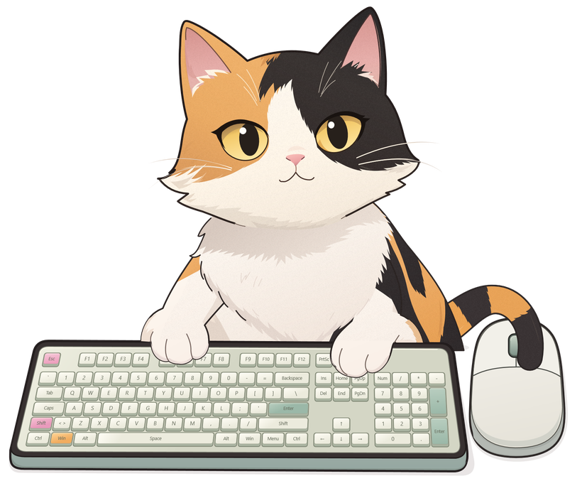

WINDOWS 桌面宠物
爪印小屋
长毛三花猫坐在朝向自己的键盘后，空格键就在爪边。你按哪个键，它就敲哪个键。你移动鼠标，它也用尾尖轻轻推过去。
Windows 10 / 11 · 需要 .NET Framework 4.8 或更高版本
动作预览
v1.0.6
安装指南
打开安装包
下载 MSI 文件，在 Windows 上双击打开中文向导，选好桌宠的安装目录。
选择启动方式
桌面快捷方式默认开启。想让猫咪每天自动出现，可以勾选「登录 Windows 时自动启动桌宠」。
把猫咪摆上桌面
从开始菜单打开「爪印小屋」，按住猫咪拖到喜欢的位置。收起工作室后，它会继续跟着你打字。
和猫咪相处
- 换衣服，换鼠标方向
- 双击猫咪或托盘里的像素黑猫图标打开工作室。可以切换暖阳三花、海盐水手、草莓围巾三款皮肤，也能调整大小，把鼠标放到键盘左侧或右侧。
- 同时敲键，尾巴拨轮
- 你一打字，猫咪就会看向键盘。按住组合键，两只前爪各自落键，身旁弹出印着键名的立体键帽。尾巴还能跟随鼠标的移动、左中右键点击和滚轮动作。
- 摸摸头，让它歇会儿
- 按住猫头，它会眯起眼睛。闲置三分钟后它会打盹，满五分钟就背起键盘原地踏步。动一下鼠标或敲一个键，它就回桌。
- 敲个单词，叫来伙伴
- 开启键鼠同步，依次敲出
cat，小猫就会出现。敲出bird，乌鸦会落在键盘角上。大小写都可以。 - 输入与偏好
- 键鼠动作在本机处理，只用于即时动画。工作室可以暂停同步；皮肤、大小、位置等偏好保存在当前用户的本地设置文件里。